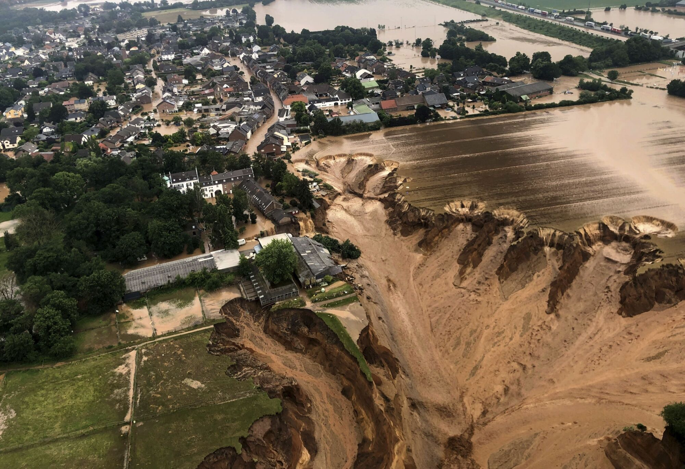
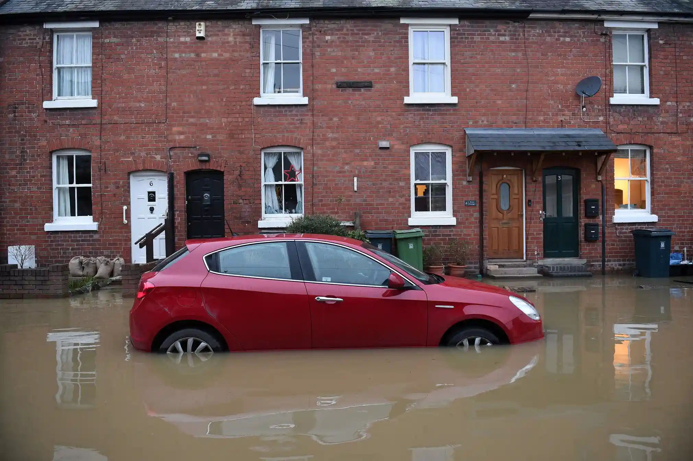
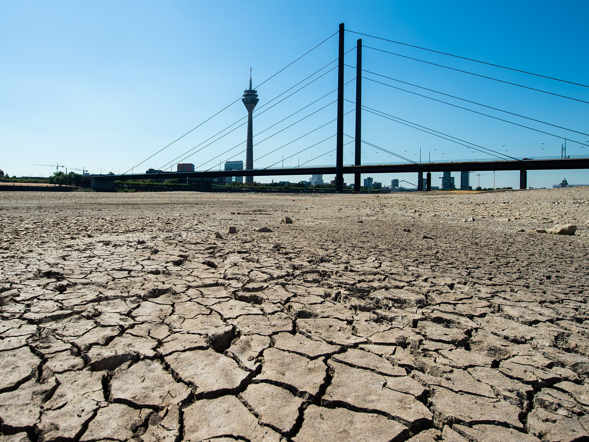
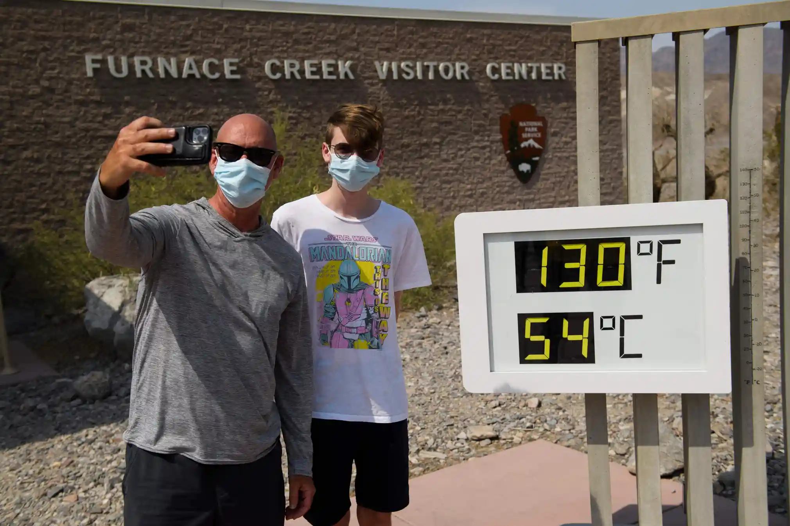
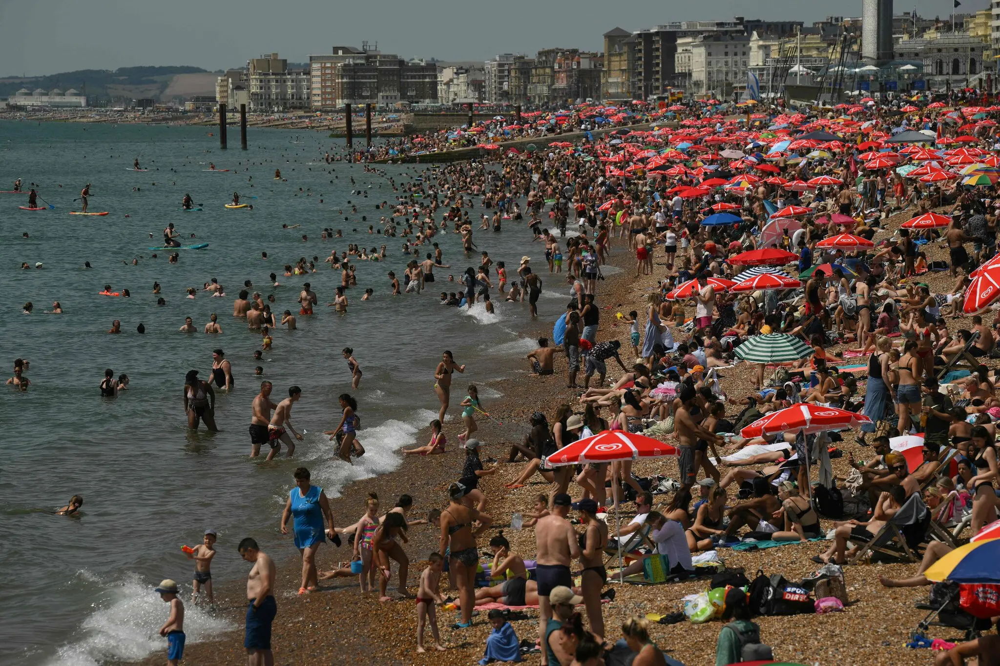
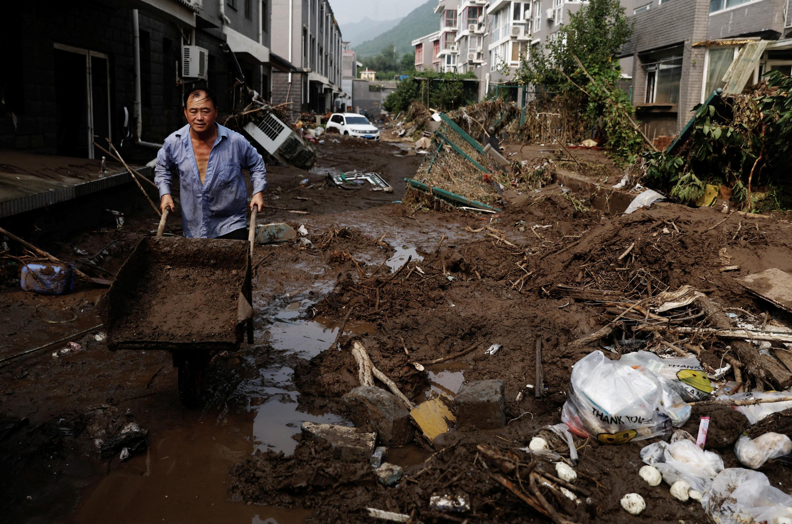
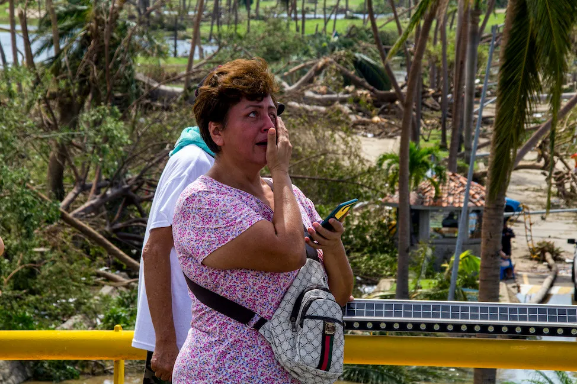
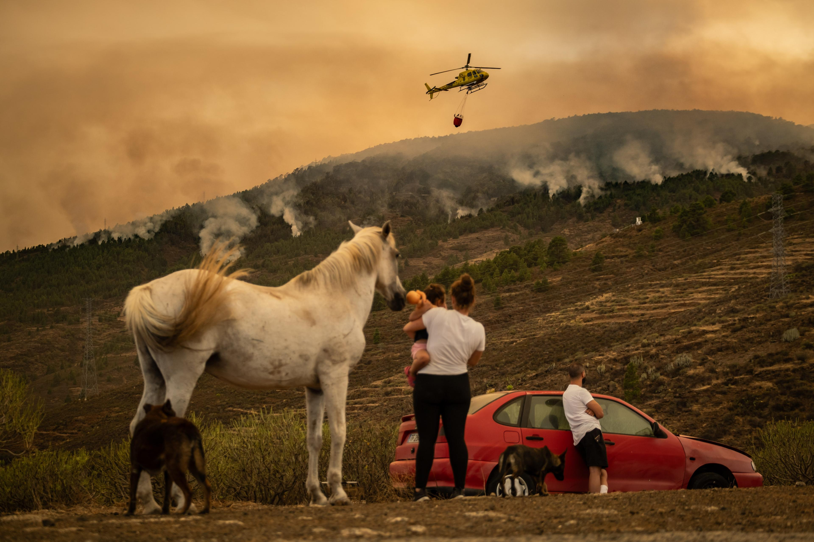
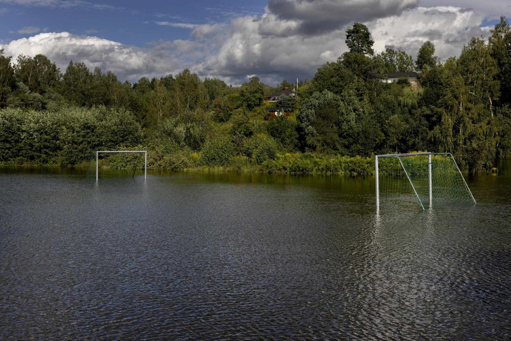

Political Weather:
How experiencing climate change shapes our political lives
There is another way of learning about climate change
- Easier, concrete, immediate, and visceral
- Personal experience





Christophe Gateau/AFP/Getty Images, Josh Edelson/AFP, Patrick T Fallon/AFP/Getty Images, EPA Photo, Rhein-Erft-Kreis/Cologne District Government/AP Photo, Oli Scarff/AFP/Getty Images, AP Photo/Alvaro Barrientos, Jennifer Gauthier/Reuters, AP Photo/Rafael Yaghobzadeh







Anadolu Agency/Ritzau Scanpix, Adrian Dennis/AFP/Getty Images, Jacob Ehrbahn, Tingshu Wang, Oscar Guerrero Ramirez/Getty Images, Remko de Waal/ANP/AFP, Daniel Leal/Agence France-Presse/Getty Images, Go Nakamura/The New York Times, David McNew/Getty Images
Article 1: Media

- “Mass media influence on the rapid rise of climate change”
- Published in International Journal of Public Opinion Research (2022)
Does mass media coverage of climate change increase public salience?
(prev. slide) Greenpeace Danmark
A quick summary –
Does mass media coverage of climate change increase public salience?
- Yes, media climate coverage can drive public salience
- Concentrated among attentive citizens
→ limit of media influence - “Real-world events” drive media coverage
- Major responsibility
<Supplementary material in Section 8>
Election Day weather
- Turnout around 70%
(2013: 72%, 2017: 71%) - 30% don’t vote
- What role does the weather play?

Conclusion
Research Question: How are voters’ climate opinions and behavior shaped by media coverage of climate change and personal weather experiences?
- Positive or “constructive” responses to climate change
- Climate change – a self-correcting problem?
- Responsibility of political elites
- “Political Weather”
- Everyday experiences
Covariate balance: age, distance, and density